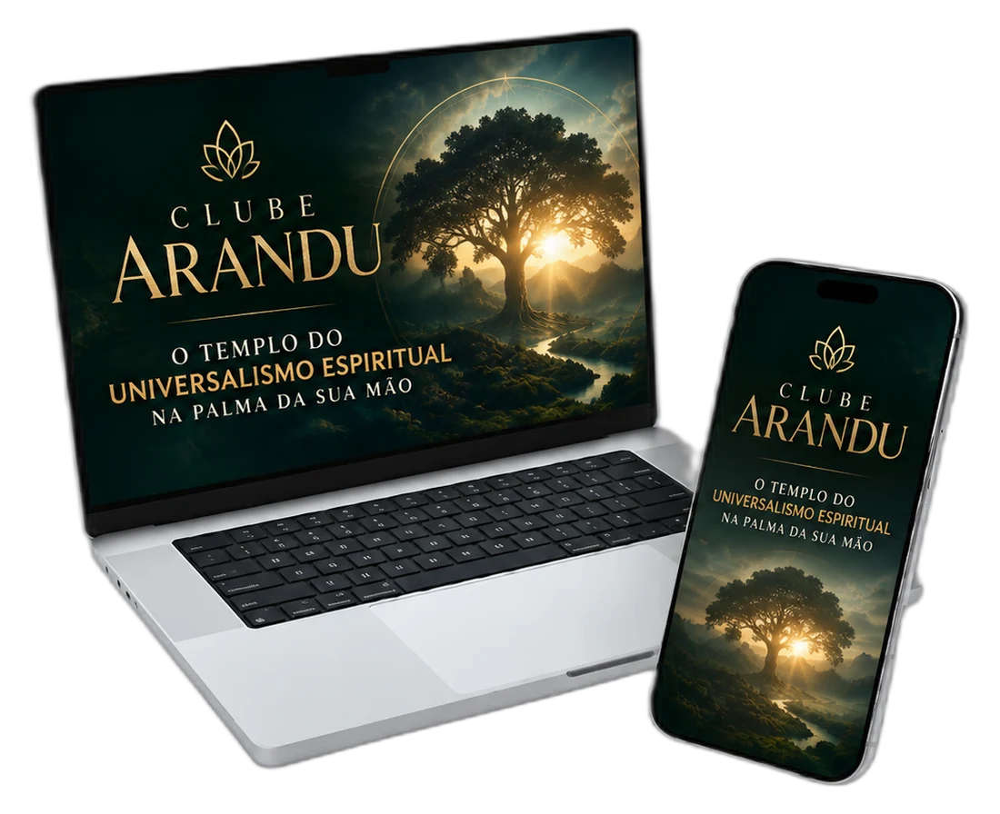
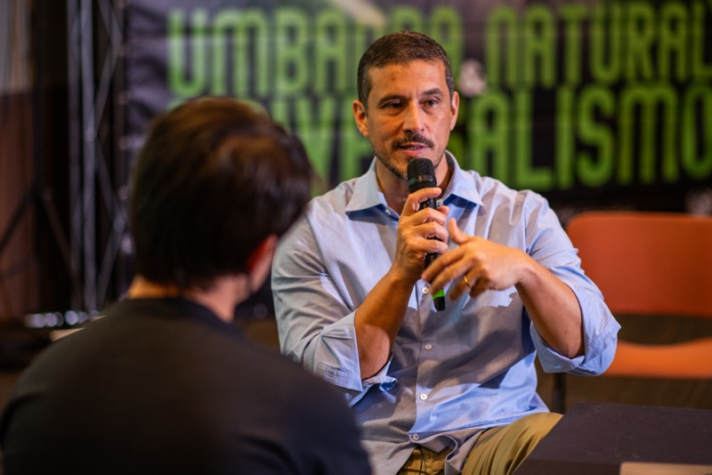
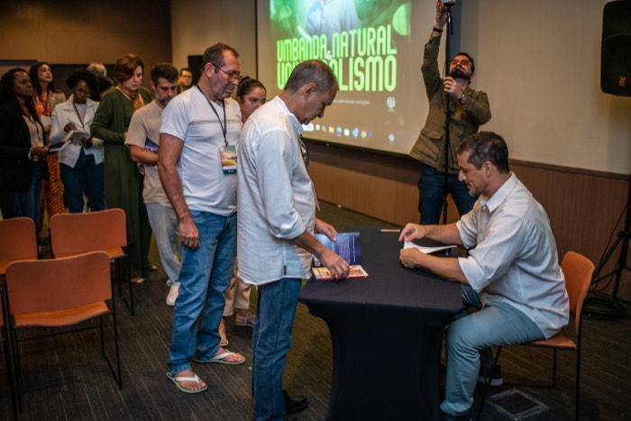
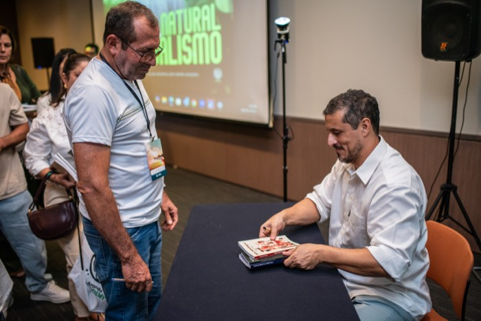
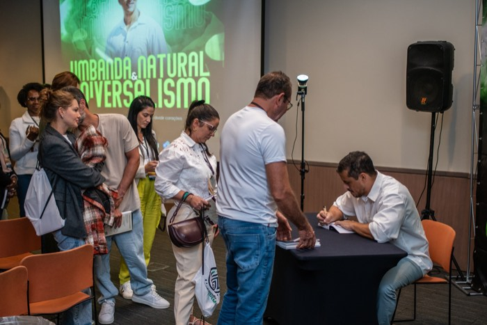
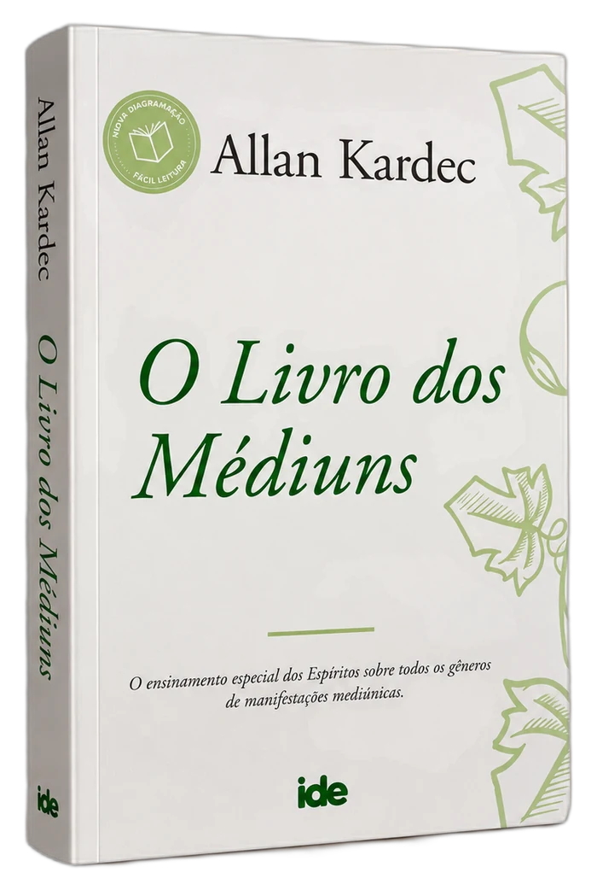
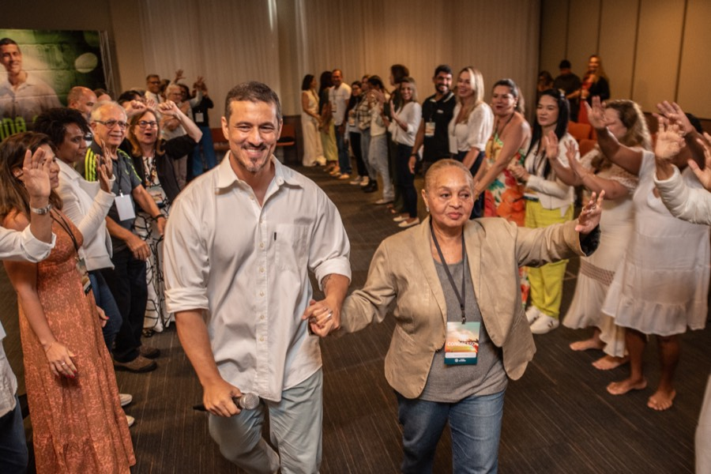
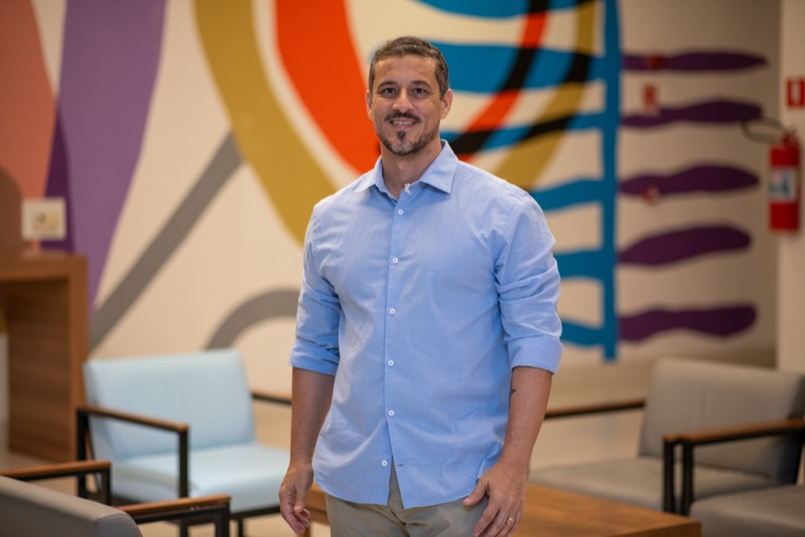
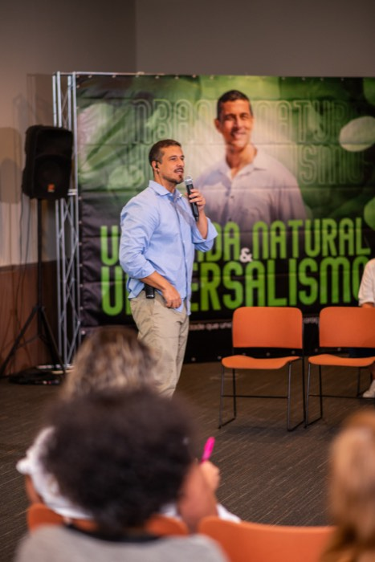
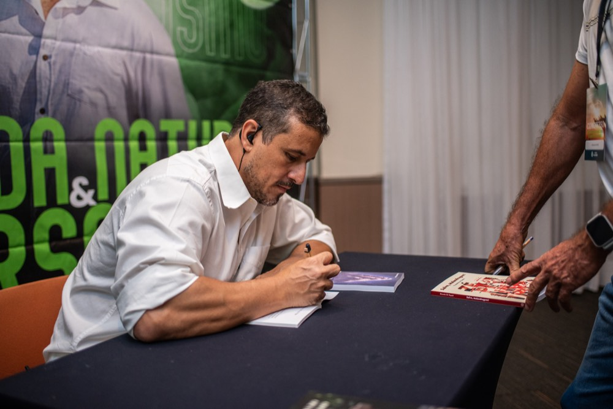

Assinatura Anual | Acesso Imediato
Não é frescura. Não é loucura. E provavelmente não cabe dentro de uma religião só.
Uma vontade de ajudar que não sabe de onde vem. Uma sensação de perceber coisas que os outros não percebem. Uma inquietação espiritual que já te fez procurar em várias portas, e nunca sentir que chegou de vez em nenhuma.
Se isso é você: existe um lugar para essa sensibilidade morar. Todos os dias, não só quando tem culto, gira ou atendimento.
QUERO FAZER PARTE DESSE TEMPLOTODO MÊS · CONTEÚDO NOVO · COMUNIDADE ATIVA

Não precisa se identificar como umbandista, espírita, católico, nada ainda. Só leia com calma:
Se várias dessas frases tocaram em você, isso tem nome: você é um universalista. E provavelmente nem sabia.


A maioria de quem sente isso passa anos calado, achando que é "indeciso" ou tendo vergonha de admitir que não fecha com uma religião só.
Religião vem de religare: religar o humano ao sagrado. Mas a sua espiritualidade não precisa de um templo físico, de um dogma fechado ou de uma instituição pra ser real.
Você não precisa de mágica, não precisa de ritual obrigatório, e não precisa duvidar de si mesmo por sentir várias verdades ao mesmo tempo. O que falta é um espaço que trate isso como o que é: um caminho espiritual legítimo, não uma indecisão.
Muita gente já foi a um terreiro, uma igreja, um centro espírita, e saiu de lá com mais dúvida do que certeza.
Outros já se sentiram enganados ou julgados na própria busca espiritual, e por isso pararam de procurar.
O problema nunca foi a sua sensibilidade.
Foi a falta de um lugar que juntasse, num só espaço, espiritualidade, mediunidade e ancestralidade, sem te obrigar a escolher um rótulo pra poder ficar.
"Fora do conhecimento não há libertação."— Ricardo Di Napoli
Sensibilidade sem espaço vira solidão. Busca sem constância vira cansaço. E cansaço, sem alguém pra sustentar isso com você toda semana, vira desistência.


Imagine ter, todos os dias, um lugar pra voltar e lembrar quem você é, sem precisar sair de casa, sem precisar de terreiro, sem precisar esperar a próxima gira, o próximo culto ou o próximo atendimento.
Não é sobre aprender uma religião nova. É sobre ter, finalmente, um espaço que organiza pra você, com fundamento teológico real e sem misticismo vazio, as três forças que já vivem dentro de você: espiritualidade, mediunidade e ancestralidade.
Toda semana, uma live, uma meditação, uma resposta, pra você nunca mais passar 7 dias sem sentir que a espiritualidade te respondeu.
Ao vivo, sobre espiritualidade, mediunidade ou ancestralidade, com profundidade real, sem enrolação e sem promessa de revelação instantânea.
Toda segunda-feira, às 17h, ao vivo, Ricardo escolhe uma obra e trabalha ela com os membros, encontro por encontro. Entra gratuita no YouTube — mas só fica lá por 7 dias. Depois, vira arquivo exclusivo de membro.
Gota de Luz: pra você manter o fio da conexão mesmo nos dias corridos, sem precisar esperar a próxima live pra sentir alguma coisa.
Trilhas de Espiritualidade, Ancestralidade e Mediunidade, pra estudar no seu ritmo, quantas vezes quiser, sem prazo de validade.
Você entra num ritmo, não numa lista de tarefas. O clube existe pra você nunca mais sentir aquele vácuo de "faz tempo que eu não sinto nada".
Toda segunda-feira, às 17h, Ricardo entra ao vivo pra trabalhar um livro com os membros do Clube, capítulo por capítulo, com o mesmo cuidado teológico de 40 anos de estudo. A transmissão é gratuita no YouTube, mas fica disponível só por 7 dias. Depois, sai do ar e vira exclusividade de quem é membro do Clube Arandu.

Introdução aos fundamentos: alma, Espírito, sobrevivência, perispírito e possibilidade de comunicação.
Diferença entre fenômeno desconhecido, superstição e aquilo que chamamos de sobrenatural.
Como investigar sem cair nem na credulidade ingênua nem na negação automática.
Análise das diferentes explicações para os fenômenos: fraude, imaginação, alucinação, causas físicas e hipótese espiritual.
Como Kardec explica a relação entre Espírito, perispírito, fluido e matéria.
Ruídos, pancadas, movimentos de objetos e outros fenômenos físicos.
Aparições, visão espiritual, percepção, imaginação e teoria da alucinação.
Fenômenos de aparição de pessoas vivas, transfiguração e alterações atribuídas à ação espiritual sobre a matéria.
Como compreender relatos de ambientes carregados, casas assombradas e percepções ligadas aos lugares.
Diferenças entre comunicações grosseiras, frívolas, sérias e instrutivas; introdução às formas de comunicação.
Médiuns sensitivos, audientes, falantes, videntes, psicógrafos, curadores e outras modalidades.
Como a mediunidade pode se desenvolver, suas diferenças individuais e também sua perda ou suspensão.
Cuidados com a prática, excessos, saúde, equilíbrio e limites no desenvolvimento mediúnico.
Quanto da comunicação pertence ao Espírito e quanto passa pela mente, linguagem e repertório do médium.
Como comportamento, intenção, vaidade, disciplina e ambiente podem interferir nas comunicações.
O que Kardec discute sobre animais, sensibilidade, percepção e possíveis fenômenos associados.
Estudo das diferentes formas de influência espiritual e dos meios propostos para enfrentá-las.
Como avaliar quem estaria comunicando; critérios para não se deixar impressionar por nomes famosos ou supostas autoridades espirituais.
O que perguntar, o que evitar, limites éticos e riscos de terceirizar decisões pessoais ao mundo espiritual.
Grande fechamento sobre discernimento, charlatanismo, mistificação, organização de grupos e critérios para uma prática séria.
Depois do Livro dos Médiuns, vem a próxima obra, o Clube do Livro nunca para.
Ricardo não construiu esse acervo em uma semana de gravação corrida. São mais de 40 anos de vivência espiritual condensados num conteúdo que já existe, já está pronto, e já está esperando por você, crescendo toda semana com mais aulões, mais meditações, mais encontros do Clube do Livro.

Sim. O Clube Arandu foi feito especialmente pra quem:
Você não precisa ter certeza de nada ainda. Não precisa "ser" nada ainda. O Clube Arandu não converte ninguém pra religião nenhuma, ele te ajuda a entender, com fundamento, o que você já sente.


Ricardo Di Napoli é administrador, filósofo e teólogo, universalista, com mais de 40 anos de vivência espiritual, incluindo décadas de estudo dentro da Umbanda e do Espiritismo. Já formou mais de 1.000 alunos, é autor de 3 livros pela Editora Arandu e fundador da Arandu Academy.
Sua proposta nunca foi fechar ninguém dentro de uma religião. Foi criar um espaço onde diferentes tradições espiritualistas dialogam e se complementam, pra quem busca entender a própria espiritualidade sem depender de ninguém pra interpretá-la por você.
"Não se trata de decorar conceitos ou passagens de um livro só. Se trata de permitir que algo desperte em você, e isso não cabe numa religião fechada. Cabe num templo aberto." — Ricardo Di Napoli
Valor do plano anual, parcelado em até 12x no cartão — não é uma cobrança mensal avulsa.
Todo membro recebe um Cartão de Membro, símbolo físico de que você deixou de ser espectador de live e virou parte do templo. Em tupi-guarani, Arandu significa sabedoria ancestral, inteligência sagrada que nasce do silêncio da floresta. Ser membro é trilhar o caminho do saber que cura.
Você pode se inscrever hoje e começar a explorar todo o conteúdo do Clube Arandu, os aulões, o Clube do Livro, as meditações, o acervo, a comunidade.
Se em 7 dias você sentir que não é pra você, basta mandar um e-mail pro nosso time e devolvemos 100% do seu investimento. Sem pergunta, sem letra miúda.
Não. O Clube Arandu é universalista: serve pra quem não tem religião nenhuma, pra quem já é de uma linha espiritual e quer se aprofundar, e pra quem só quer entender a própria sensibilidade com fundamento.
Não. O Clube reúne conteúdo de espiritualidade, mediunidade e ancestralidade sob um olhar universalista, e a proposta de Ricardo é trazer, com o tempo, convidados de outras tradições também (Doutrina Espírita, Ciência e Espiritualidade, entre outras).
Toda segunda-feira, às 17h, Ricardo entra ao vivo no YouTube pra trabalhar um livro com os membros, capítulo por capítulo. A live fica gratuita no YouTube por 7 dias, depois disso sai do ar e passa a ficar disponível só pra quem é membro do Clube Arandu. A primeira obra é O Livro dos Médiuns, de Allan Kardec, em 20 encontros.
Não. Ricardo se define como universalista e ensina com respeito por todas as tradições. A proposta é te ajudar a entender sua espiritualidade com fundamento, nunca converter ninguém.
Não. O Clube trabalha percepção, intuição e fundamento teológico. A mediunidade é um dos temas, não um requisito de entrada.
O Clube Arandu é uma assinatura anual. Enquanto você for membro, o valor da sua assinatura fica travado nessa condição, mesmo que o valor de entrada suba pra novos membros.
Sim, 100% online, de qualquer dispositivo, no seu ritmo.

Você pode parar de se sentir "sem religião definida" e começar a se reconhecer como o que sempre foi: alguém que enxerga o sagrado maior do que qualquer rótulo. O Clube Arandu é esse templo, aberto, sem dogma, sem hierarquia, sem julgamento, esperando por você todos os dias, não só quando tem live.
QUERO FAZER PARTE DESSE TEMPLO